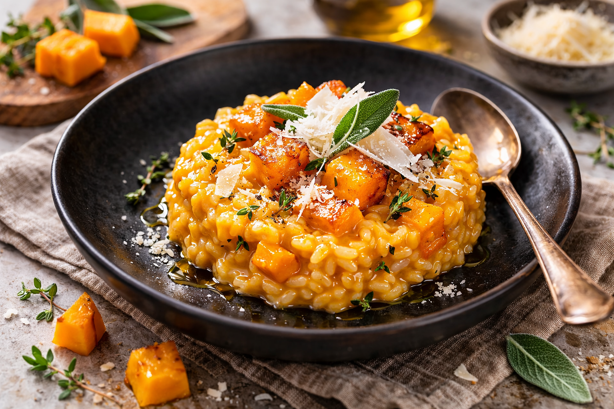
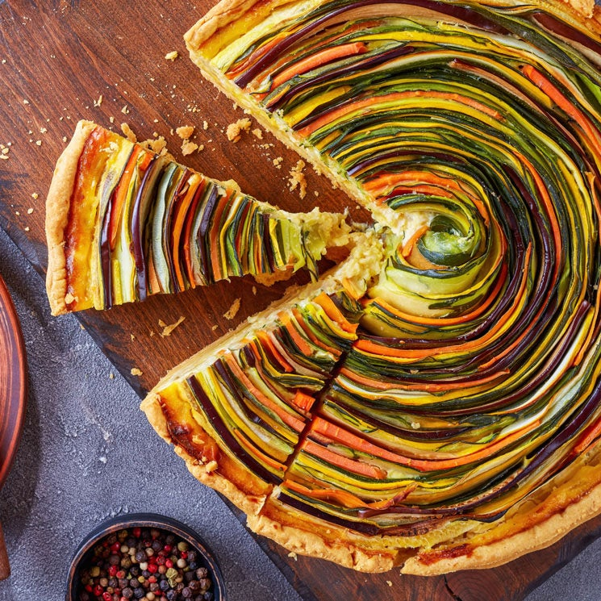
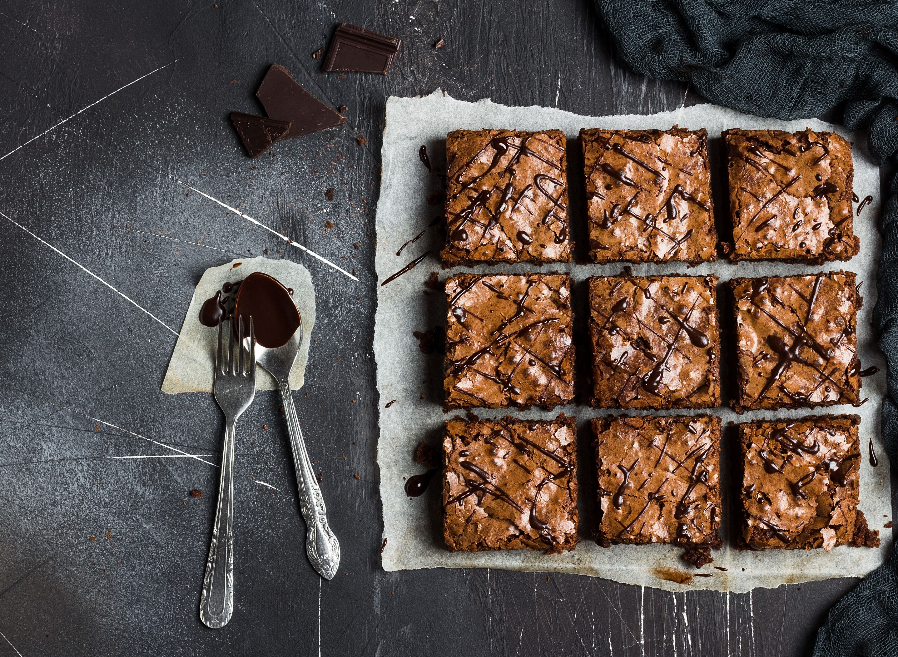
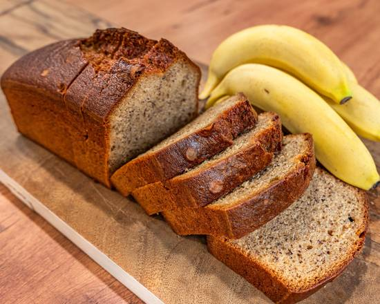

El recetario
Elegí qué te gustaría cocinar
Seleccioná una categoría para ver sus recetas y descargar cada preparación en PDF.
Recetas saladas

Risotto cremoso de calabaza
Arroz arborio, calabaza asada y parmesano para una cena reconfortante.
Descargar receta en PDF
Tarta de verduras y ricota
Una tarta colorida con ricota suave y vegetales de estación.
Descargar receta en PDFRecetas dulces

Brownies de chocolate
Intensos, húmedos y con una costra delicadamente crocante.
Descargar receta en PDFLemon pie con merengue
Base crocante, crema cítrica y un copete de merengue italiano.
Descargar receta en PDF
Budín de banana y nueces
La solución más rica para aprovechar bananas maduras.
Descargar receta en PDFDetrás del delantal
Quién mantiene el sitio
Lucía Fernández es aficionada a la cocina cotidiana y reúne aquí preparaciones claras, probadas en casa y pensadas para compartir. Para consultas, escribile desde el formulario de contacto.
Hablemos
Contacto
¿Tenés una sugerencia o querés compartir una receta? Dejá tu mensaje.